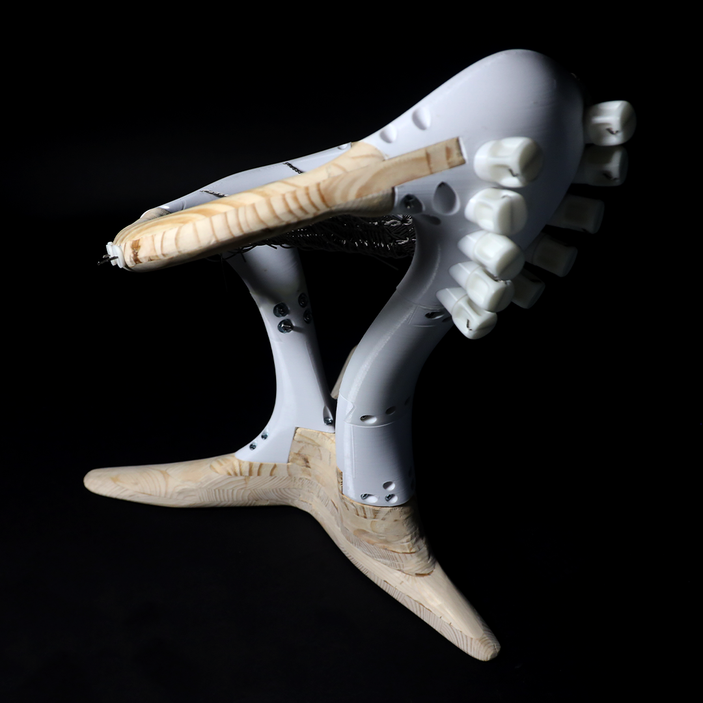
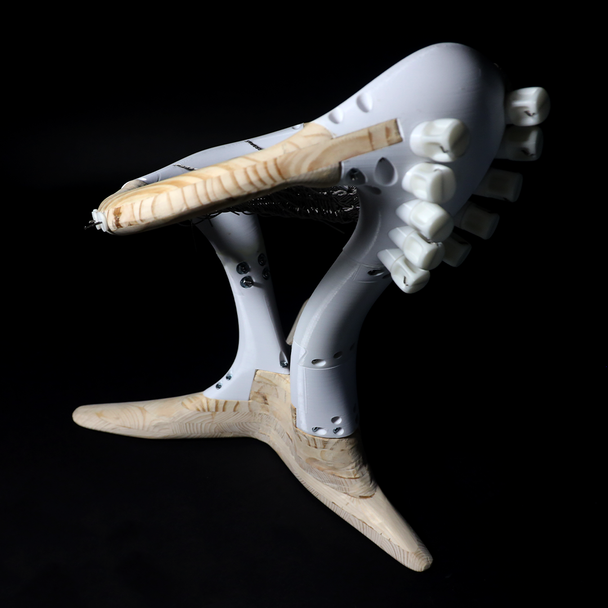

Final Photos
 

In traditional, contemporary, and experimental guitar building processes, the conflicting structural needs are ever present; A luthier must find a way to stabilize a cantilevering neck in tension from a number of strings running from a headstock to a body.
Guitars are ideally light enough to hold in performance and practice, but sturdy enough to meet these structural demands. Common strategies include embedding a truss rod into the neck, as well as dovetail and bolted connections from neck to body.
These building strategies--the ingredients for building most guitars--are transferred and translated into the design of a chair meant for practicing the instrument. Of particular importance was the balance between a light-looking frame and sturdiness, as well as the uneven loading condition which practicing the guitar presents.
The final design allows for a degree of disassembly and the further customization of a core “body.” The tensioning system, in particular, encourages an attitude of care and maintenance of the chair in a way that is similar to that of a guitar.
Demonstration